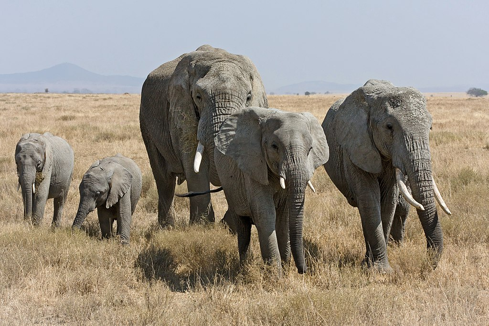
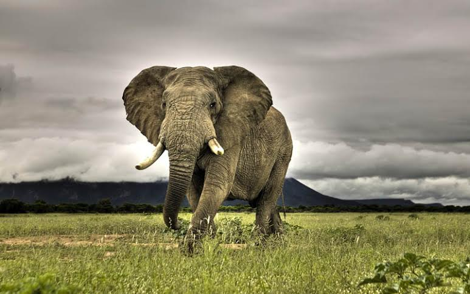

Những con voi đực to lớn có thể có khối lượng cơ thể lên tới 7,5 tấn và cao trên 4 m. Những con voi cái nhỏ nhất thì chỉ cao 2,7 m và nặng 3 tấn. Nhìn chung với tầm vóc khổng lồ của mình, trên thảo nguyên châu Phi hầu như voi rừng không bị động vật nào gây hấn, kể cả những mãnh thú săn mồi, tuy nhiên voi rừng cũng có thể bị đàn sư tử giết chết nếu đi lạc vào lãnh địa của sư tử.
Những con voi đực to lớn có thể có khối lượng cơ thể lên tới 7,5 tấn và cao trên 4 m. Những con voi cái nhỏ nhất thì chỉ cao 2,7 m và nặng 3 tấn. Nhìn chung với tầm vóc khổng lồ của mình, trên thảo nguyên châu Phi hầu như voi rừng không bị động vật nào gây hấn, kể cả những mãnh thú săn mồi, tuy nhiên voi rừng cũng có thể bị đàn sư tử giết chết nếu đi lạc vào lãnh địa của sư tử.
Voi đồng cỏ châu Phi có tai to nhất trong các loài voi. Vòi của chúng có 2 ngón tay chứ không phải 1 như ở Voi châu Á (Elephas maximus). Ngà Voi đồng cỏ châu Phi dài tới 3 m và nặng khoảng 15–20 kg. Cả voi đực và voi cái đều có ngà. Chúng có bốn cái răng hàm lớn, mỗi hàm có hai cái, mỗi cái có đường kính 10 cm và dài 30 cm.
Voi có một trí tuệ xếp vào hàng đứng đầu trong số các loài vật. Chúng có khả năng ghi nhớ rất tốt. Voi đầu đàn thường dùng khả năng này để dẫn đàn di chuyển tìm nguồn nước và thức ăn. Voi giao tiếp bằng việc phát ra hạ âm.

Voi sống thành đàn tại những xavan và đồng cỏ. Mỗi đàn gồm có một voi đầu đàn là con voi cái già nhất trong đàn, các con voi cái và con của chúng. Voi đực non sẽ rời đàn khi 10-15 tuổi. Chúng gia nhập các nhóm voi đực hoặc sống độc lập. Voi đực sau khi rời đàn vẫn giữ liên lạc với đàn gốc của chúng.
Tương xứng với kích thước của chúng, voi ăn mỗi ngày hết 225 kg cỏ, lá cây và uống hết 200 lít nước. 4 răng hàm to lớn của chúng giúp việc nghiền nát thức ăn dễ dàng hơn. Dạ dày voi không có lông thúc đẩy chúng phát triển kích thước khổng lồ để chứa đựng một chiếc bao tử vĩ đại. Voi dùng chiếc vòi của mình để vơ cỏ đưa lên miệng để ăn hoặc hút nước rồi phun vào miệng khi uống. Với những cành cây ở cao, voi dùng vòi bẻ cành hoặc dùng ngà húc đổ cây. Voi cũng có thể ăn quả trên ngọn cây bằng cách đứng dưới gốc và để các loại khỉ trên cây ném quả xuống. Người ta còn phát hiện những con voi ở vùng hồ Kariba ăn cả thực vật thuỷ sinh.

Vào mùa sinh sản, voi cái phát đi những tín hiệu đến voi đực. Ngay lập tức những con voi đực tập trung gần đàn voi và bắt đầu đánh nhau. Con voi chiến thắng sẽ được voi cái cọ xát thân vào thân voi đực, đó là tín hiệu đồng ý giao phối, sau đó mỗi con một ngả nhưng vẫn giữ liên lạc. Khi mang thai, voi cái rời đàn đẻ con và nuôi con một thời gian trước khi trở lại đàn. Trải qua quá trình mang thai tới 22 tháng (dài nhất trong số động vật có vú), voi cái sinh ra một chú voi con chỉ cao 1 m và nặng 100 kg. Voi con bú sữa mẹ trong suốt 5 năm đầu đời và trưởng thành sau 10-15 năm.